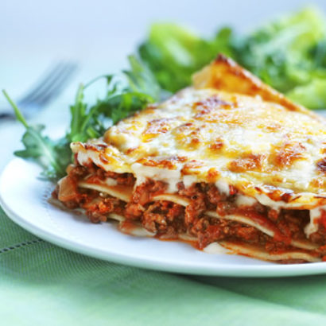

Meatless Lasagna

Description
No one will miss the meat in this tasty, meatless, home made lasagna.
Try using eggless pasta, and dairy-free ingedients for a true vegan experience!
Ingredients
- 12 uncooked lasagna noodles
- cooking spray
- 1 tbsp olive oil
- 1 c chopped shallots
- 2 minced garlic cloves
- 1 c diced red bell pepper
- 1 tsp crushed red pepper flakes
- 4 c sliced fresh mushrooms OR 2 c hydated soy flakes
- salt and ground black pepper to taste
- 1 and a half c ricotta
- 1/4 c butter
- 2 tbsp all-purpose flour
- 4 c milk
- 1 c grated Parmesan
- 1 c shredded mozzarella
- 1/4 c chopped fresh flat-leaf parsley
Steps
- Bring a large pot of lightly salted water to a boil. Stir in lasagna noodles and return to a boil. Cook the pasta uncovered, stirring occasionally, until the noodles have cooked through but are still firm to the bite, about 8 minutes. Drain and set aside.
- Preheat oven to 175 degrees C.
- Spray a 23x33 cm baking dish with cooking spray.
- Heat olive oil in a large skillet over medium-high heat. Cook and stir shallots and garlic in the hot oil until shallots are tender and translucent, about 5 minutes.
- Stir red bell pepper and red pepper flakes into the shallot mixture until bell pepper is slightly softened, 1 to 2 minutes.
- Mix mushrooms into the skillet; season with salt and black pepper. Cook and stir until the mushrooms have given up their liquid and are browned, about 10 minutes more. If you are using the soy option, cook until excess water evaporated.
- Stir ricotta cheese into the mushroom or soy mixture; remove skillet from heat and set aside.
- Melt butter in another skillet over medium heat. Whisk in flour until smooth, 2 to 3 minutes.
- Whisk milk into flour mixture until smooth; bring to a simmer and whisk constantly until thickened, about 5 minutes. Season with salt and black pepper.
- Coat the bottom of the prepared baking dish with a small amount of the white sauce.
- Arrange 4 lasagna noodles in a single layer over the white sauce.
- Spread about 1/3 of the mushroom or soy mixture over the noodles.
- Pour about 1/3 of the white sauce over the mushroom or soy mixture. Repeat the layers 2 more times, starting with 4 more lasagna noodles.
- Sprinkle Parmesan cheese, mozzarella cheese, and parsley over the lasagna.
- Bake in the preheated oven until cheese is melted and sauce is bubbly, 30 to 40 minutes. Allow lasagna to rest for 10 minutes before slicing and serving.